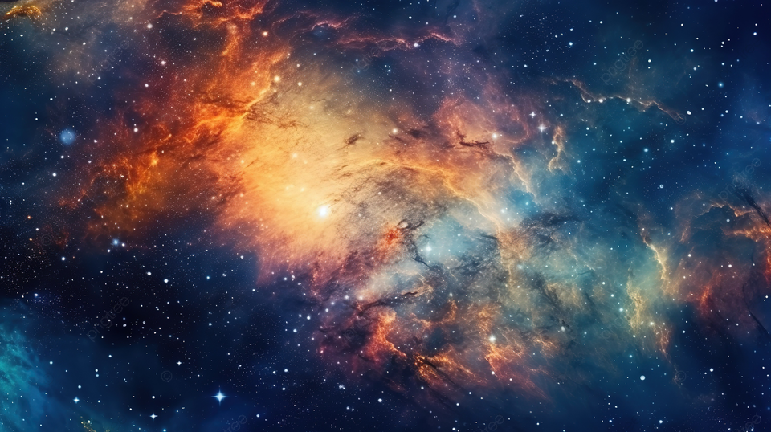

01
Cosmos
The cosmos includes everything that exists: space, time, matter and energy. It contains billions of galaxies, stars, planets and other celestial objects. Scientists study the cosmos to understand how the universe began, how it changes over time and what mysteries may still be waiting to be discovered. The universe continues to expand, revealing new questions about its origin and future.